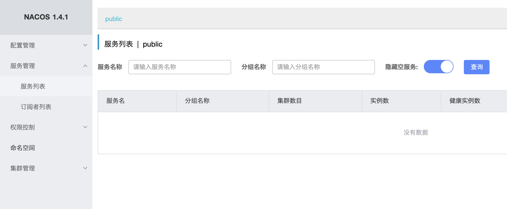
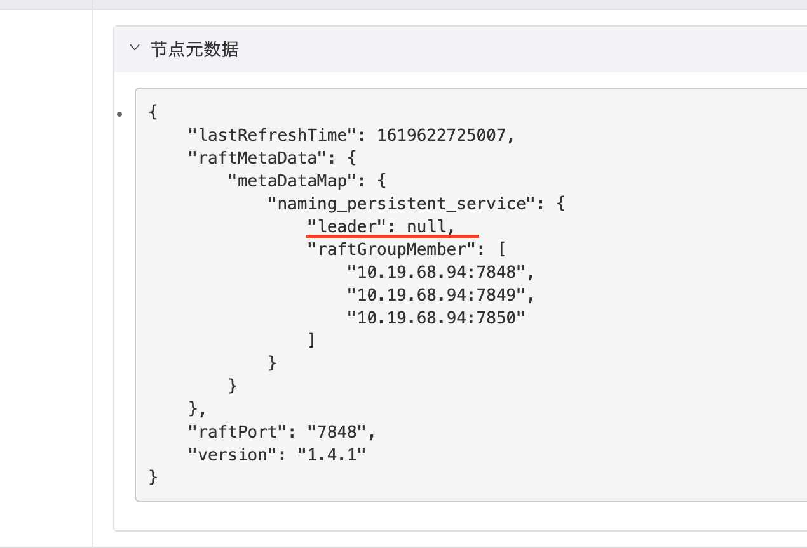
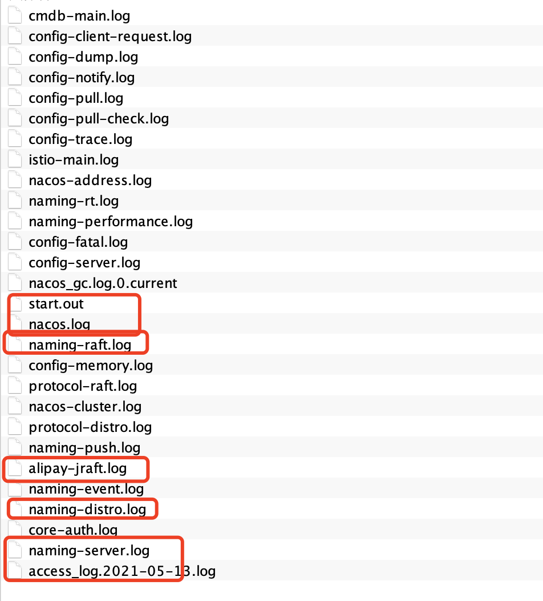
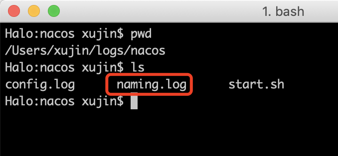
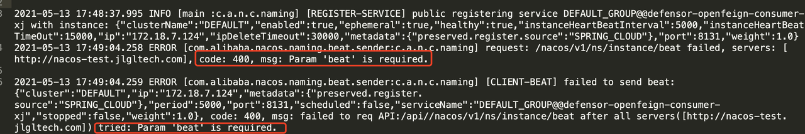
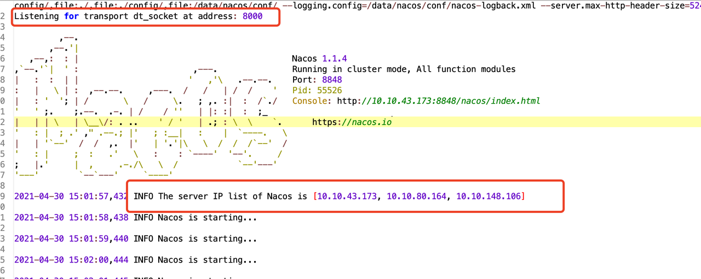
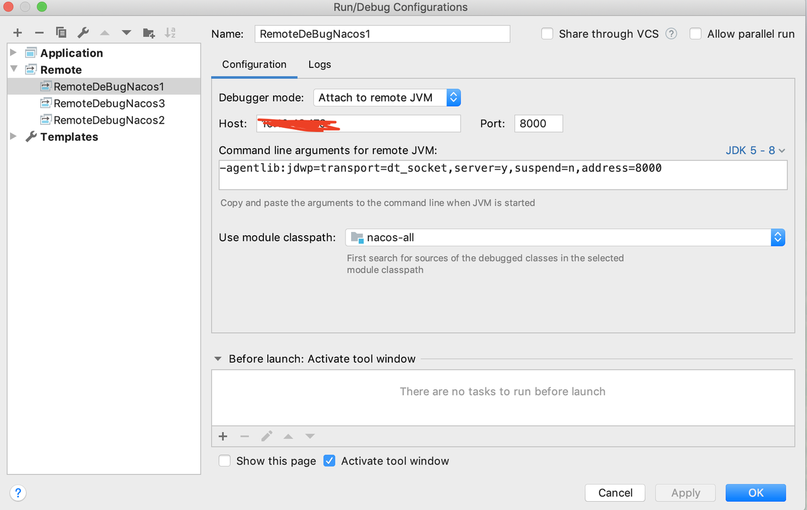
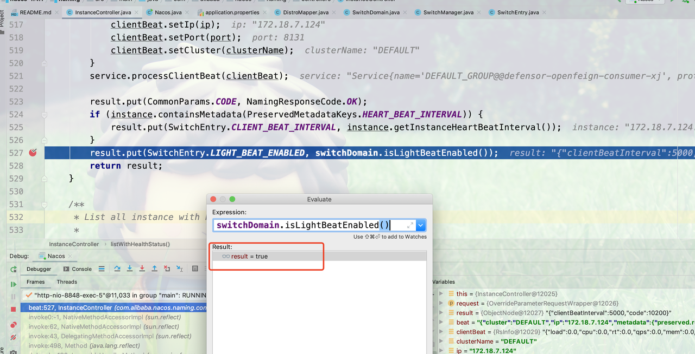
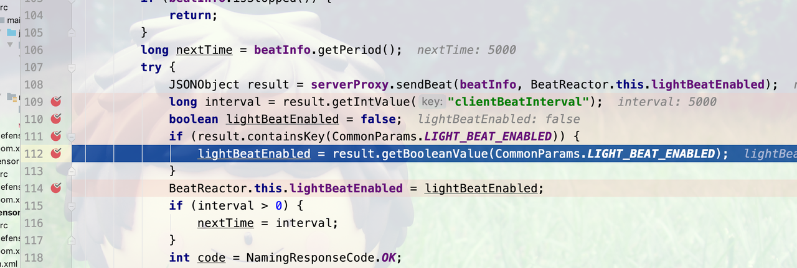
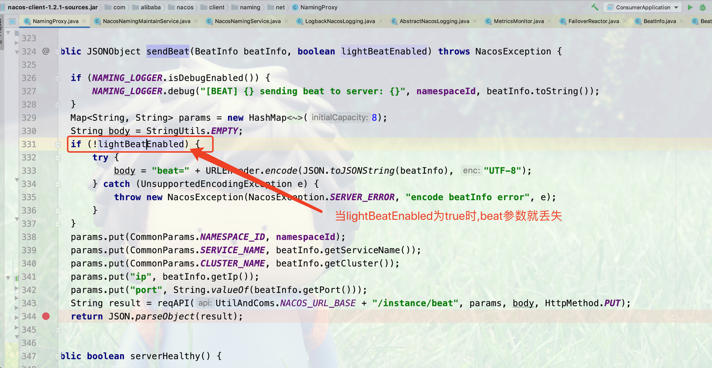

1. Nacos 升级背景
随着公司业务的快速发展，产品的服务化和平台化在高速建设和迭代之中 。而 Java 技术栈为主的技术体系，搭建平台化和服务化，需要注册中心，经过技术选型之后我们选择了 Nacos 作为注册中心。至于什么是 Nacos，本文不做更多阐述，有兴趣的小伙伴可以借助谷歌搜索引擎快速了解。
目前公司技术体系主要以 Python 和 Java 为主。但是 Python 服务会通过 Nacos 进行服务注册与发现调用Java服务。两套技术体系的存在，多多少少会存在一些问题。比如 Python 版的 Nacos 客户端服务注册时和Java版 Nacos 客户端(Spring Cloud Alibaba 中封装的 Nacos 客户端)服务注册就不太一样。 Nacos 升级的原因主要是Python服务注册时的元数据，被Java客户端用于服务发现，过滤的时候引起NPE异常，还有就是借此机会统一 Nacos 服务注册发现的客户端基线。
2. Nacos 升级
2.1 Nacos 升级版本的选择
由于空指针异常是 2020 年 6 月 19 号之后被 Fix，考虑到 Nacos 2.0不是很稳定，因此将 Nacos 升级到 1.4.1 版本是当前最佳选择。

目前公司使用 Spring Cloud 构建微服务体系，Spring Cloud 版本主要是 H.SR4。此次升级需要把 Nacos Server 升级到 1.4.1 版本。经查看源码，得知 Spring Cloud Alibaba 2.2.5.RELEASE 是基于Spring Cloud H.SR8版本和 Nacos Client 1.4.1版本构建，经过统计分析，当前大多数业务应用是基于H.SR4版本构建，升级到H.SR8版本可以平滑过渡。
因此综合考虑，选择将 Spring Cloud 基线统一到 Spring Cloud H.SR8 版本，从而最终统一 Spring Boot 和 Spring Cloud 基线。
2.2 Nacos 升级方案的选择
Nacos 升级方案比较简单，首先升级 follower，最后升级 leader，在升级的过程中，日志中会有一些少量报错(比如：com.netflix.client.ClientException: Load balancer does not have available server for client)，但是正常的，等到全部升级完成之后，达到稳态，就不会报错。
3. Nacos 升级出错
Nacos 升级过程全程按照升级方案快速升级，在开发环境，测试环境和预发环境都已顺利升级。 但在升级线上环境时，升级之后发现 Nacos Server 服务列表出现空白，空白列表页如下图所示，通过F12查看网络请求，显示当前Nacos集群不可用。

通过查看可以看到，leader为null，如下图所示: 
之后发现大量服务报错，选择回滚回 Nacos 1.1.4版本。回滚之后出现部分服务掉线，并且不会自动注册上来。 最后通过重启掉线服务，重新把服务注册上来了。 这里主要两个疑点： 1. 为什么升级后服务列表会为空？ 2. 回滚后，为什么部分服务无法通过心跳机制自动注册上来，必须通过重启服务才能注册到 nacos 上？
4. Nacos 升级失败排查
4.1 Nacos 升级失败排查
Nacos 升级失败之后，排查思路刚开始主要是分析 Nacos Server 和 Nacos Client 日志。
4.1.1 Nacos Server初步日志排查
首先分析的是 Nacos Server中的日志，Nacos Server 主要的需要关注的日志列表如下截图所示:

在 Server 端 access log 里发现不少心跳请求的 400 错误:
10.19.169.55 - - [12/May/2021:00:00:00 +0800] "PUT /nacos/v1/ns/instance/beat?app=unknown&serviceName=xxx%40%40xxx-server&namespaceId=public&port=60600&clusterName=DEFAULT&ip=10.19.178.160 HTTP/1.1" 400 26 0 Nacos-Java-Client:v1.4.1,Nacos-Server:1.1.4
10.19.21.39 - - [12/May/2021:00:00:00 +0800] "PUT /nacos/v1/ns/instance/beat?app=unknown&serviceName=xxx%40%40xxx-server&namespaceId=public&port=60600&clusterName=DEFAULT&ip=10.19.178.160 HTTP/1.1" 400 26 0 Nacos-Java-Client:v1.4.1,Nacos-Server:1.1.4
10.19.169.55 - - [12/May/2021:00:00:00 +0800] "PUT /nacos/v1/ns/instance/beat?app=unknown&serviceName=xxx%40%40xxx-server&namespaceId=public&port=60600&clusterName=DEFAULT&ip=10.19.178.160 HTTP/1.1" 400 26 1 Nacos-Java-Client:v1.4.1,Nacos-Server:1.1.4
这里可以看到出错的心跳里，nacos 的客户端是 v1.4.1 版本，高于服务端的 1.1.4。
Lesson Learn: 中间件的客户端版本需要管控，保持和服务端的版本一致。
4.1.2 Nacos Client 初步日志排查
带着这个线索，我们查看报错服务的 nacos client 日志。 Nacos 客户端的日志一般存在 ~/logs/nacos 目录下，如下截图所示:

查看 Nacos Client 的 naming.log 文件发现示例报错日志如下截图所示:

可以看出 Nacos Client 发送心跳日志报错，通过观察生产上其它服务均发现类似报错，说明 Nacos Client向 Nacos Server发送心跳经常失败。但是心跳失败，服务却一直健在，没有被T掉，这个原因需要进一步排查落实。 其实上述报错一直存在，没有被发现的原因是平台化前期主要关注了业务应用日志，对于中间件客户端日志没有得到足够的关注
Nacos 作为中间件，不管是 Nacos Server或 Nacos Client 都应该将所有日志通过ELK收集，并实时监控告警.
根据 nacos server 和 client 端的日志线索，我们找到 nacos 官方的一个 issue : Param ‘beat’ is required
结合这个 Issue 和查看 nacos server 的源代码和发布历史，我们发现 nacos server 从 1.2.0 开始心跳接口发生了变化：
- beat 参数从原来的 required 变成 optional
- beat 参数从原来的放在url 参数里，变成放在 body 里
- 增加了「轻量心跳」功能，开启时心跳里不会带着 beat 参数。这个功能客户端默认是关闭，而 server 端默认是开启。在心跳返回里显式地告诉客户端开启时，客户端才会开启，否则客户端这个功能总是会重置为关闭。
虽然心跳接口有变化，但是查看 1.1.4 server端的代码，还是能够兼容高版本 client 的心跳的。这个改动并不能解释回滚后不能自动注册的问题。
4.2 Nacos 升级过程复现
通过初步日志分析其实无法解决所有疑惑，因此需要进行复现，还原现场，进一步排查问题。由于生产环境用的是虚拟机，快速还原现场的方法是:直接克隆生产环境 Nacos 所在的机器，用于环境搭建。然后用带缓存的包，按照操作步骤重现。
复现时 Nacos Server 版本是1.1.4，而 Nacos Client 端是1.2.1版本或者其它大于1.1.4的版本。经过测试开发和运维的操作，成功复现生产环境 Nacos Server 升级失败的场景。
通过快速克隆虚拟机的方式，问题可以复现。但只看日志没有办法，查清问题，因此进一步排查问题只能死磕 debug 代码进一步结合生产日志排查。
5. Nacos 升级失败排查
5.1 Nacos Server本地单机版Debug
Nacos Server单机版debug比较简单，设置参数源码启动即可，但最终确认单机版 Nacos Server无法复现Param ‘beat’ is required的问题，经确认这个问题只存在于集群搭建的 Nacos Server。
5.2 Nacos 本地集群版 Debug
5.2.1 使用 Nacos Client 1.2.1的服务远程 Debug Nacos Server 1.1.4
- 从 github 上下载 Nacos 源码，copy成两份或三份，分别导入到 Idea 中，分别修改端口 8847，8848
- 修改配置 Nacos server 数据库连接信息
查看本机 IP，比如为172.18.7.124，进入 /Users/xujin/Nacos/conf， cluster.conf 配置文件如下:
172.18.7.124:8847 172.18.7.124:8848分别以Debug方式启动 Nacos Server
使用 Nacos Client 1.2.1搭建demo，从 Nacos Client的发送心跳的代码开始Debug代码 可以查看代码 com.alibaba.Nacos .client.naming.net.NamingProxy#sendBeat 通过本地集群Debug可以查出为什么心跳发送失败，出现Param ‘beat’ is required报错，但出现报错不被踢掉的原因以及服务踢掉之后，再也无法重新注册的问题很难排查。
5.2.2 使用 Nacos Client 1.2.1的服务远程Debug Nacos Server 1.4.1
按照上述方式进行本地debug，发现高版本的 Nacos Server 1.4.1版本已经向下兼容，因此不会出现Param ‘beat’ is required.的400报错
5.3 Nacos 远程集群 debug
5.3.1 远程 Debug Nacos 集群的原因
为什么要进行远程Debug Nacos 集群，原因是主要有以下两点:
为什么 Nacos Server从1.1.4升级到1.4.1失败之后，回滚到1.1.4版本业务应用就无法重新注册?
其实本地集群debug，无法排查从1.1.4升级到1.4.1失败，再回滚到1.1.4这个中间过程的发生了什么，因此只能用类似生产环境的升级方式去远程Debug.
5.3.2 如何远程debug Nacos Server集群
如何远程debug Spring Boot的应用网上的资料比较多，在这里将不进行阐述.通过查看 Nacos Server的启动脚本发现，Naocs Server已具备远程debug的条件，从下图可以看出已经开启了远程debug端口8000。

IDEA远程debug，配置如下图所示:

6. 代码分析总结复盘
6.1 为什么 Nacos 升级会导致业务应用大面积无法提供服务？
Nacos server 升级并不会导致应用无法提供服务。这次的问题主要两个问题叠加:
升级后的 Nacos server 只是正常启动了，但实际上并没有正常工作。并且 Nacos server 集群的全部三个节点都被升级上去并处于这种无法正常工作的状态，导致 Nacos server 整体无法提供服务。
回滚 Nacos server 版本之后，部分业务应用使用的客户端版本高于 server ，缺少老版本 server 端需要的参数而无法自动注册到 Nacos server 上，导致这部分业务无法正常提供服务。
6.2 为什么升级后的 Nacos 无法正常工作？
经跟阿里负责 Nacos 开源核心开发者(感谢@彦林@涌月)一起排查，发现这次升级是从 rc 环境上把运行中的 Nacos Server直接打包压缩复制到生产环境用于升级，而复制过去的目录包含了rc 环境的缓存数据， Nacos Server启动时会读取缓存数据，从而会影响 Nacos Server 的正常工作。
如果这种异常的工作状态没有被发现，并且 Nacos server 集群的全部三个节点都被升级上去并处于这种无法工作的状态下，导致升级后的 Nacos 集群无法正常工作。 Nacos Server中的报错日志中发现RC环境 Nacos Server的Ip和端口
6.3 为什么升级其中一个节点时，没有马上发现问题并停止升级，而是把三个节点都升级了?
Nacos Server启动后 Nacos .log 和 start.out 里面无报错，显示successfully 并且 Nacos Server日志文件较多，没有查看所有的日志文件，后续将 Nacos Server的日志接入到ELK中查看
6.4 为什么回滚之后部分服务没有自动重新注册上来，需要重启服务才能注册？
目前生产上的 Nacos server 是1.1.4版本，但各个业务服务使用的 Nacos 客户端版本没有统一管控，有些使用的是比 server 端版本更高的客户端。 - 对于客户端版本小于等于 1.1.4 的服务，能够通过心跳自动重新注册。 - 对于1.1.4 之后的版本（1.2.0及以上）， Nacos 的心跳接口发生了变化： 1. beat 参数从原来的 required 变成 optional 2. beat 参数从原来的放在url 参数里，变成放在 body 里 3. 增加了「轻量心跳」功能，开启时心跳里不会带着 beat 参数。这个功能客户端默认是关闭，而 server 端默认是开启。在心跳返回里显式地告诉客户端开启时，客户端才会开启，否则客户端这个功能总是会重置为关闭。
升级当天的场景:
1.2.0 以上的客户端在 server 端升级到 1.4.1 版本的时候，「轻量心跳」的开关被 server 端打开，如下图所示:

回滚之后，因为客户端「轻量心跳」被打开，上报的心跳没有带 beat 参数，而 1.1.4 的 server 端对于 beat 参数是 required 的，导致 400 报错，没有进入到后面的自动注册流程。


客户端在收到 response 后，由于 1.1.4 的 server 并没有「轻量心跳」的支持，本来应该重置「轻量心跳」为关闭的。但由于收到报错后抛了异常，后面的重置「轻量心跳」为 false 的操作被跳过，导致「轻量心跳」一直处于开启的状态，也就一直没有带上 beat 参数，于是心跳时 server 持续报错，无法自动注册。
客户端重启后，由于「轻量心跳」默认关闭，且 1.1.4 版本的 server 端也不会告诉客户端开启「轻量心跳」， beat 参数会一直携带，也就能正常自动注册了。
6.5 既然高版本的客户端正常情况下是会带着 beat，为什么生产环境还会有大量持续的心跳失败错误？
两个原因叠加起来导致的: 1. 生产环境部分业务使用的客户端版本高于服务端版本（1.1.4）。beat 参数在 1.1.4 版本之后发生了较大变化（beat 参数从 required 变成 optional，由放在 url 参数 变成 放在 body 中） 2. 1.1.4 版本 的 Nacos server 有 bug。Server 端对于临时服务的一致性采用的是 Distro 协议，当心跳发到不是自己负责的节点上时，会转发到负责的节点上面进行处理。但是转发时没有带上 body 信息，而高版本的客户端已经改为把 beat 参数放在 body 里，导致心跳报错。
6.6 为什么心跳持续报错但生产环境上没观察到服务被踢下线的情况?
- 只有当心跳发到不是自己负责的节点上时，才会发生转发，从而丢失 body 里 beat 参数
- 客户端发心跳出错时会重试 3 次
- 客户端每 5s 一次心跳，Server 端超过 30s 没有收到正确的心跳后才会把实例设为不健康。也就是客户端发送的心跳需要连续(1+3)*6=24次心跳都没发到负责的节点上时，实例才会被标记为不健康。3 个节点的集群，这个概率大约是 百万分之 5。
- 生产环境上一个服务一般都会至少有两个以上实例，一个实例不健康不影响服务。 综上，生产环境上很难观察到服务被下线的情况。但是会有大量的心跳出错重试的问题，需要尽快把 Nacos server 升级上去。
6.7 为什么 fat 环境、rc 环境升级没问题， 线上环境升级出问题？
升级 fat 环境和 rc 环境时.不是直接复制正在运行的 Nacos Server来升级，没有环境缓存的数据，因此升级后能正常工作。 中间件，作为最底层的基础设施，应该保证部署结构等各个环境保持一致.
7. 总结:
- 升级生产环境时是从 rc 环境上把运行中的 Nacos server 直接复制到生产环境用于升级，而复制过去的目录包含了 rc 环境的缓存数据，会影响 Nacos server 的正常工作。
- 生产环境各个业务服务使用的 Nacos 客户端版本没有统一管控，有的版本比服务端高。而高版本的客户端在 server 端升级上去后，被开启了一些高版本的功能。回滚回低版本的 server 端时，这些高版本的功能低版本的 server 端无法兼容，导致回滚后无法自动注册，需要重启业务服务才能注册。